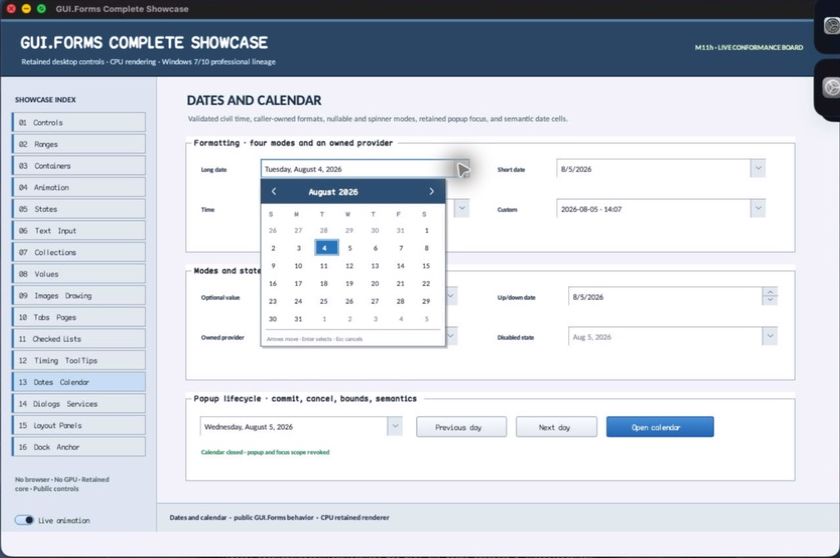

struct · library
DateTimeFormatProvider
DateTimeFormatProvider is an immutable caller-substitutable vocabulary and pattern bundle for DateTimePicker formatting. It separates locale-shaped presentation from civil-value authority without introducing a platform locale runtime dependency.
OBSERVED: bundle 004 value-provider split; M4 build, focused tests, and Screen Sharing passisolated per type
Visual evidence

Ownership and hierarchy
- Hierarchy
- DateTimeFormatProvider
- Declaration
- include/gui_forms/controls/panel/date_time_picker/date_time_format_provider/date_time_format_provider.hpp:10
- Definition
- src/controls/panel/date_time_picker/date_time_format_provider/date_time_format_provider.cpp
Declared methods
english_united_states public
[[nodiscard]] static DateTimeFormatProvider english_united_states()Returns the library's canonical English month/day names and short, long, time, and month-year patterns.